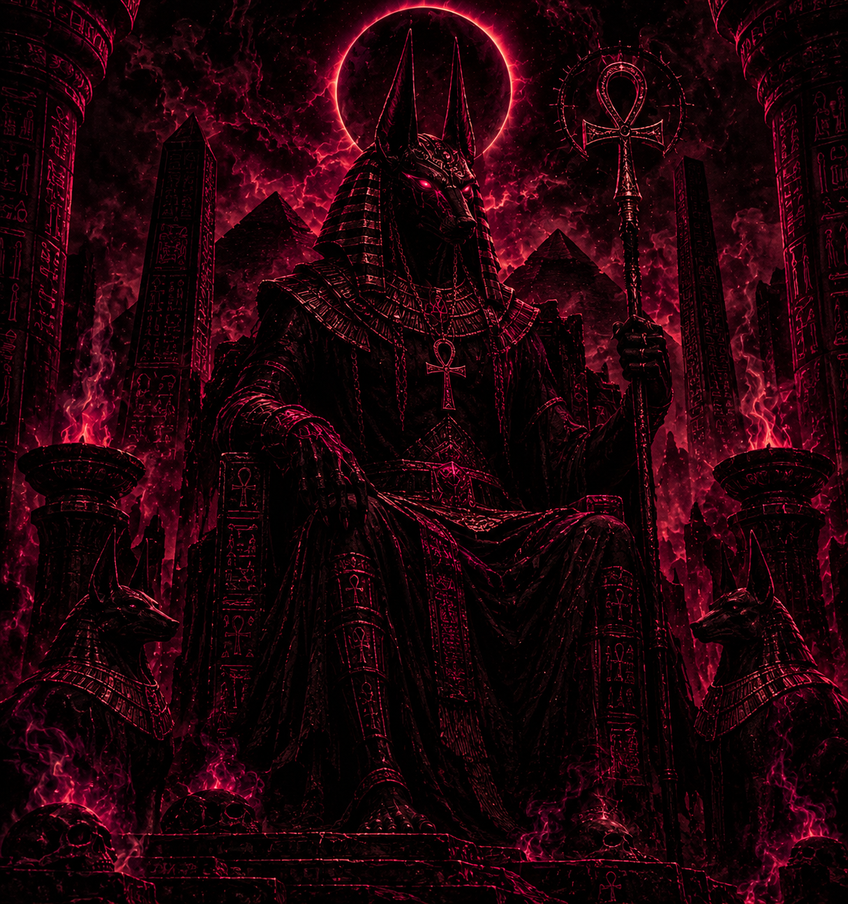

EL JUICIO DEL ALMA
Anubis aparece vinculado al pesaje del corazón frente a la pluma de Maat, una ceremonia que simbolizaba el juicio moral del difunto.
ARCHIVO DE ENTIDADES · REGISTRO 01
EL GUARDIÁN DEL INFRAMUNDO
Deidad de la antigua mitología egipcia, asociada con la muerte, la momificación y la protección de los difuntos. Su figura representa el tránsito entre la vida y el más allá.
EXPLORAR REGISTRO HISTÓRICO VOLVER AL ARCHIVO
REGISTRO HISTÓRICO
Anubis es una de las deidades más reconocidas de la religión del antiguo Egipto. Se representa habitualmente con cuerpo humano y cabeza de chacal. Su función estaba relacionada con los rituales funerarios, la momificación y la protección de los muertos durante su viaje al más allá.
LECTURA SIMBÓLICA
Su representación reúne elementos relacionados con la muerte, la protección y los antiguos rituales funerarios de Egipto.
Anubis aparece vinculado al pesaje del corazón frente a la pluma de Maat, una ceremonia que simbolizaba el juicio moral del difunto.
Era considerado protector de los muertos y de los espacios funerarios, acompañando al difunto durante su tránsito al más allá.
Su relación con la momificación lo convirtió en una figura asociada a la preparación del cuerpo y a la continuidad de la existencia después de la muerte.
DOCUMENTACIÓN DEL ARCHIVO
Registros y estudios que permiten comprender la importancia de Anubis dentro de la religión y las prácticas funerarias del antiguo Egipto.
Documenta la función de Anubis como protector de los difuntos, su participación en la momificación y su presencia durante el juicio del corazón.
ESTUDIO HISTÓRICO CONSULTAR FUENTEEl estudio "Anubis: Embalmer and Protector of the Dead" explica su papel como embalsamador divino y guardián del cuerpo después de la muerte.
INVESTIGACIÓN ACADÉMICA CONSULTAR ESTUDIOExplica el viaje del difunto y la ceremonia del pesaje del corazón, en la que Anubis supervisaba la balanza mientras Thot registraba el resultado ante Osiris.
CONTEXTO RELIGIOSO Y CULTURAL CONSULTAR ARTÍCULO